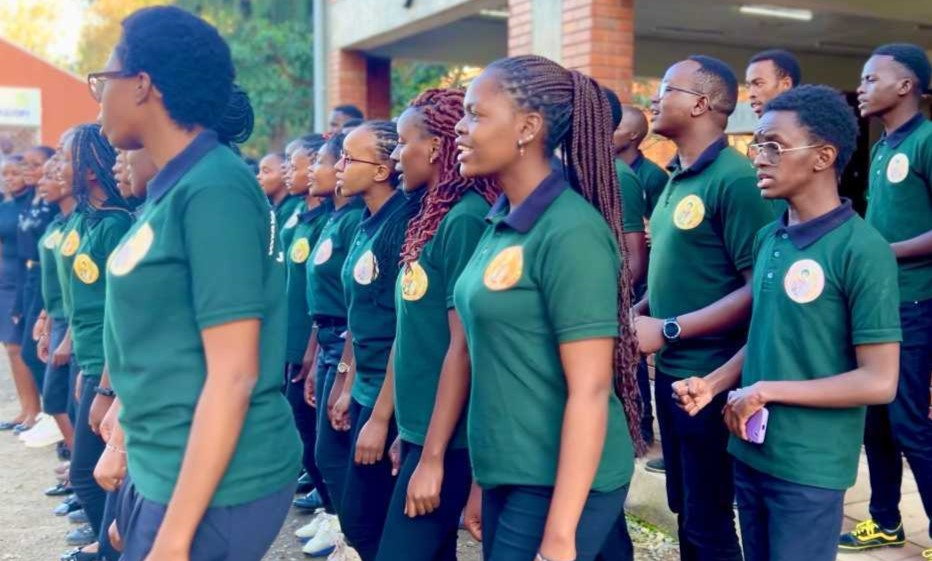

CATCOM
“A vibrant Catholic Community for wholesome growth a union for growing in love for oneself and others.”
"Pray,
Believe,
Worship.
Believe,
Worship.



“A vibrant Catholic Community for wholesome growth a union for growing in love for oneself and others.”
 Kevin Gesora, 08 May 2022
Kevin Gesora, 08 May 2022
 Kizito Walelah, 24 August 2021
Kizito Walelah, 24 August 2021